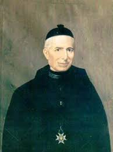
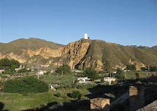

En la Villa de Huércal-Overa, el 27 de febrero de 1816, en un hogar de labradores, nace Salvador Valera Parra. A la edad de 14 años, se hace necesario su traslado a Murcia, para poder proseguir sus estudios en el Seminario de San Fulgencio. En esta ciudad le acoge su tía María Josefa, Abadesa del Convento de la Orden de Clarisas Capuchinas, la cual le hospeda en la casa de donados del Convento, una vivienda situada frente al mismo. A la edad de 23 años, Salvador es ordenado sacerdote el 4 de abril de 1840. Parece ser que la ordenación tuvo lugar en la ciudad de Alicante, ya que el Obispo de Cartagena por aquellas fechas se encontraba refugiado en la localidad de Tudela. Unos seis días después Canta su Primera Misa un viernes de primavera, en el Convento de las Monjas Capuchinas, convento que había sido testigo fiel de los desvelos, sacrificios y entrega del joven Salvador. No podía ser de otra manera, el Cura Valera agradecía con este gesto, toda la ayuda recibida. Días después de su primera Misa, el Cura Valera llega a su pueblo, a Huércal-Overa. No ha llegado a cumplir los 33 años cuando el Cura Valera se hace cargo del curato de la Parroquia de San Lázaro en Alhama de Murcia. En este pueblo lleva una vida sencilla y con una austeridad que se acerca a la pobreza, pues tiene como mansión unos graneros anejos a la iglesia. Enseñó el evangelio a sus feligreses y cuando se despide de Alhama a finales de mayo de 1851, el pueblo le acompañó lloroso a lo largo de la carretera, en la despedida más memorable que se recuerda. 
La villa de Huércal-Overa, perteneciente a la Mancomunidad de Municipios del Levante Almeriense, estuvo encuadrada en el centro de la región cultural de la Bastetania, en el cruce de caminos que forman el corredor del Mediterráneo y la cuenca del Bajo Almanzora. Tuvo desde época prehistórica, desde la metalúrgica época argárica, la misión de poner en contacto a los hombres del inclemente sureste peninsular con los labriegos de las fértiles vegas grana-dinas. Además, la riqueza minera de sus cordilleras circundantes provocó que fenicios, griegos y cartagineses se asentaran en el litoral. Y que los últimos, que llegaron a controlar la explotación y comercialización de los minerales, utilizaran nuestra comarca como plataforma para proyectar su ansiada hegemonía en la orilla norte mediterránea, en conflicto con Roma. 